Reporting Statistics
The Statistics dashboard allows you to report statistics collected from
components during a simulation.
Open the Dashboard
The Statistics group contains the most commonly used commands for working
with statistics.
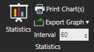
Statistics opens the dashboard.
Print Chart(s) allows you to print one or
all charts as a document.
Export Graph allows you to export all charts
as either an Excel or CSV file. An Excel file will group each chart into
its own sheet, for example 1 file for two charts. A CSV file will be created
for each chart, for example 2 files for two charts.
Interval defines the global sampling rate
for reporting Statistics behavior properties. This includes cumulative,
interval and state-based statistics. The default is to report data every
60 seconds during simulation.
By default, the Home tab will display the Statistics group on the Ribbon.
To access the Statistics group in other contexts, you could add the entire
group or its commands to the Quick Access Toolbar.
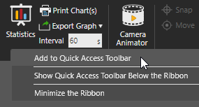
Choose a Layout
The Statistics dashboard divides content into separate tabs. Each tab
uses a layout and grid system for organizing charts by columns and rows.
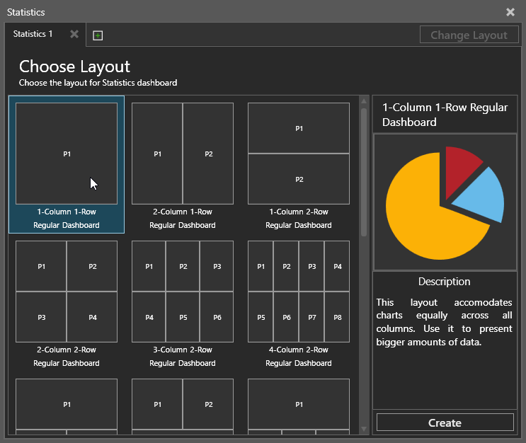
By default, an empty tab will display a view for choosing a layout.
A layout defines how many charts and where they are placed in the view
of that tab.
- Select a layout. This displays a preview of the
layout in the side panel.
- Do one of the following:
- Double-click the layout.
- In the side panel, click Create.
- If you need to change the layout, click Change
Layout and then repeat steps 1 and 2.
Note: Changing the layout will not remove
charts unless you are switching to a layout with less placeholders.
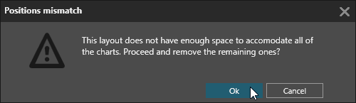
Choose a Chart
By default, a placeholder without a chart will display options for adding
a chart. You can either create a new chart from scratch or use a template.
If you want to use a template, you must first select a component in the
3D world. Generally, the selected component must have a Statistics behavior
or be the type of component required by the template.
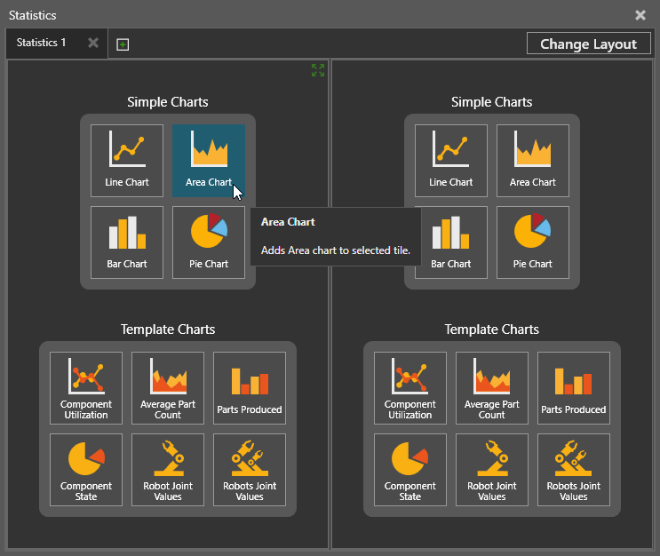
Edit Chart Properties
A chart plots a data
series or the values of a property in a component. A data series
can contain data from multiple components that have a common property.
A chart can plot more than one data series and have its own sampling interval.
A sampling interval defines how often the
value of a data series is plotted in a chart. By default, all charts use
a global sampling interval.
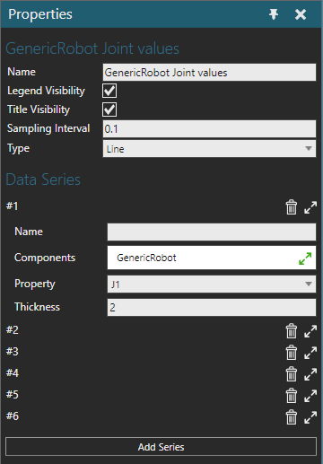
A chart contains the following properties.
- Name - Defines the
name of the chart.
- Legend Visibility
- Displays the legend of the chart and its data series.
- Title Visibility
- Displays the title of the chart.
- Sampling Interval
- Defines the sampling interval of the chart for plotting its data
series. A -1 value means the chart uses the global sampling interval.
- Type - Defines the
chart type.
- Data Series - A set
of properties for adding and editing data series in the chart.
- Add Series -
Creates a new data series.
- Index - Indicates
the order of the data series in the chart with additional options
for deleting, collapsing and expanding the data series.
- Name - Defines
the name of the data series.
- Components -
Defines a list of one or more components in the 3D world referenced
by the data series.
- Property - Defines
which property in the list of components whose value is reported
by the data series.
- Thickness - Defines
the display thickness of the data series in the chart.
Plot Data
A chart will plot data when you run a simulation based on its sampling
interval. If you reset and run a new simulation, data from the previous
simulation will be cleared from all charts in the Statistics dashboard.
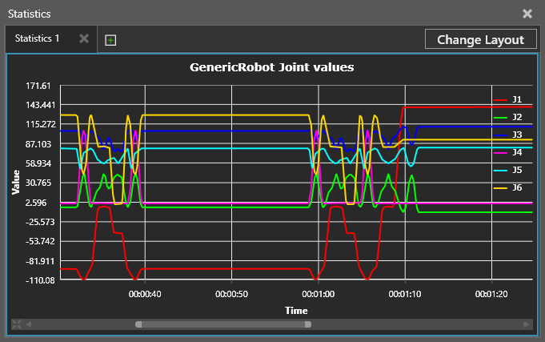
Note: A chart is a layout item, so charts
can be saved with a layout. This does not include plotted data.
View Data
You can read, zoom in or out, pan and focus on data displayed in a chart.
These actions, of course, depend on the chart type.
- Do one or more of the following:
- To read the value of a data series in a chart,
point at the data series to display a label.
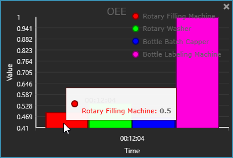
- To zoom in or out on a chart, point at the
chart, and then rotate the mouse wheel forward to zoom in or backward
to zoom out.
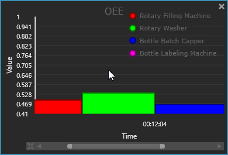
Tip: On the scroll bar there is a button
to reset the view of the chart. You can also use either end of
the scroll box to expand or trim the view.
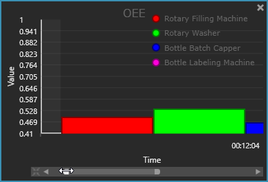
- To pan a chart, use the arrows of the scroll
bar or drag its scroll box. If no scroll bar is displayed, zoom
in on the chart.
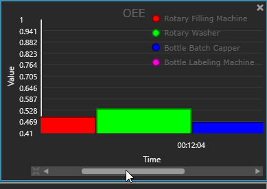
- To focus on a range of data in a chart, point
at the beginning or end of the range in the chart, and then drag
the pointer to select and view that data.
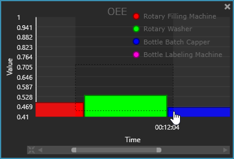
Print Charts
You can print any chart in the Statistics dashboard.
- Open the Statistics
dashboard.
- Do one of the following:
- If you want to print one chart, select that
chart.
- If you want to print all charts in a tab,
select that tab.
- Do one of the following:
- On the Home tab,
in the Statistics group, click Print Chart(s).
- Click the File
tab to go backstage, and then click Print,
and then click Statistics Chart.
- Make any needed changes to print settings, and
then do one of the following:
- To print the file, click Print.
- To export the file in an XPS format, click
Export to XPS.
Export Data
Data plotted in charts can be exported to an Excel or CSV file.
- Open the Statistics
dashboard.
- In the Statistics dashboard,
select the tab containing the data you want to export to file.
- On the Home tab, in
the Statistics group, click Export
Graph, and then do one of the following:
- To export data to an Excel file, click Export to Excel. Data from each chart will
be stored in its own sheet in the Excel file.
- To export data to a CSV file, click Export to CSV. Data from each chart will
be stored in its own CSV file.